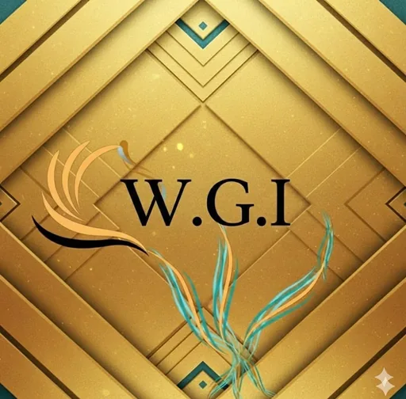

1. Notion is your company brain
SOPs, docs, dashboards and client hubs. The truth lives here.

Tyna Systems is a software development and operations studio based in Lagos, serving SMEs globally with Notion, ClickUp, websites, CRM and connected backend systems.
Tyna Systems was created because too many brilliant Founders were burning out while trying to run growing businesses from WhatsApp chats, spreadsheets and scattered files.
Before this, we were building operations for fast-growing companies, but we kept seeing the same pattern: no systems, no SOPs, no clear ownership and no easy way for the founder to step away.
Build My Company OSFinance, operations, projects, CRM and websites are connected into one system using Notion + ClickUp. Your team gets clarity. You get your time back.
No more running the business from WhatsApp chats and spreadsheets. No more “where is that file?” at 11pm. We install the structure so your company runs without you chasing every task.
SMEs with great products can stall when the founder is stuck approving invoices, updating docs and managing every project. That is not scaling. That is surviving.
We believe SMEs deserve the same operational firepower as big companies without needing a $200k/year COO salary.
We are building toward giving 1,000 SMEs a Company OS that makes them unstoppable, organized and free from daily firefighting.
Systems should serve people, not the other way around.
One link for clients. One system for your team. Zero bottlenecks for the founder.
SOPs, docs, dashboards and client hubs. The truth lives here.
Tasks, projects, timelines and automation. Work happens here.
Your team runs with clarity while founders stop chasing every update.
We serve agencies, service businesses, e-commerce brands and consultants that want to scale without hiring five more managers.
Tyna Systems keeps business trust, compliance, and data protection at the center of every website, dashboard, CRM, and backend operating system we build.
Registered business record with CAC.
SCUML number will be added once issued.
We respect privacy, business information, and responsible data handling.
Use the embedded map below for direction support and quick location confirmation.

Approved partner connected to the Tyna Systems business community and resource network.
Visit Partner PageOur approved partner section is reserved for organizations that add real value to founders, SMEs, operations and growth systems.
View Partners